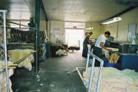
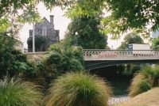
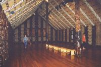
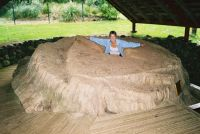
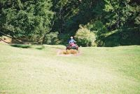

Caroline and Helen's Round-the-World Trip
New Zealand
March
New Zealand
Please click on a thumbnail to view the full size picture
|
View of Auckland from Mount Eden |
Coromandel National Park |
Coromandel Peninsula |
|
Cathedral Cove |
Helen & her rock formations |
Prince of Wales Feathers (geyser), Rotorua |
|
Bubbling mud, Rotorua |
Geysers, Rotorua |
Traditional Maori Hangi |

Aratiatia Dam (opened daily for tourists) |
Crater, Craters of the Moon |
Fumaroles, Craters of the Moon |
|
Huka Falls |
Sunset, Taupo |
Stacks of sheepskins, Nelson |
|

Cleaning & grooming the sheepskins, Nelson |
Art Deco buildings, Nelson |
Coastline along east coast of North Island |
|
Gannets at Cape Kidnappers |
Gannet chick, Cape Kidnappers |

Parliament House & The Beehive, Wellington |
|
Nice old church, Wellington |
Seal at Kaikoura |
Sea kayaking with dolphins, Kaikoura |
|
Ok, there are dolphins here somewhere... |
Seagulls on rocks, Kaikoura |
Seals lazing around, Kaikoura |
|
Pup marooned on a rock, Kaikoura |
Maori Leap Cave, Kaikoura |

Terraces in the cave, Kaikoura |
|
Helen on a Penny Farthing in the museum, Christchurch |

River Avon and very english building, Christchurch |
Richard Pearse Memorial (possibly the first manned flight) |
|
Moeraki Boulders |
Albatross, Taiaroa Head |
Cormorant nests, Taiaroa Head |
|
Disappearing Gun, Fort Taiaroa |
Big fat seal, Taiaroa Head |

View of Otago Peninsula from Lanarch Castle |
|
Lanarch Castle |
Sunset over Lake Te Anau |
Milford Sound |
|
Milford Sound |
The Remarkables (mountains), Queenstown |
Southern Alps |
|
View of Milford Sound from a plane |
Waterfall, Milford Sound |
Caroline and the plane |

View of Milford Sound from a plane |
Sutherland Falls (highest hanging waterfall in the world) |
View of Milford Sound from the plane |
|
Fox Glacier |
Mounts Cook & Tasman |
Franz Josef Glacier |
|
Ice Cave, Franz Josef Glacier |
Helen the famous mountaineer, Franz Josef Glacier |
Looking up an ice tunnel, Franz Josef Glacier |
|
Helen squeezed into an ice crevasse, Franz Josef Glacier |
Nice limestone scenery, South Island |
Pancake Rocks, South Island |
|
Seal waving, Abel Tasman |
Seal playing, Abel Tasman |
Abel Tasman from our sea kayak |
|
Our sea kayak |
Abel Tasman coastline |
Oldest street of original settler's houses, Nelson |
|
View from Mount Tongariro |
Emerald Lake, Mount Tongariro |

Maori meeting house, Waitangi |
|

Big tree stump (used to make huge war canoe), Waitangi |
Bay of Islands |
Helen kneeboarding, Bay of Islands |

Captain Caroline steering She's A Lady, Bay of Islands |

HUGE blue marlin, Paihia |
Caroline quadbiking |
|

Caroline quadbiking |
Caroline quadbiking |
Caroline quadbiking |
|
Caroline quadbiking |
World's 2nd biggest tree (15m girth) |